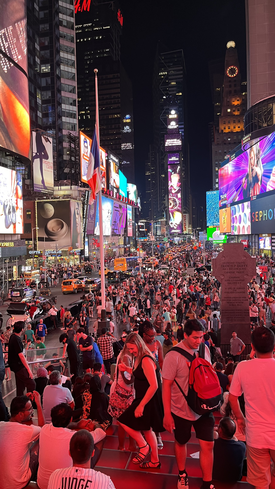
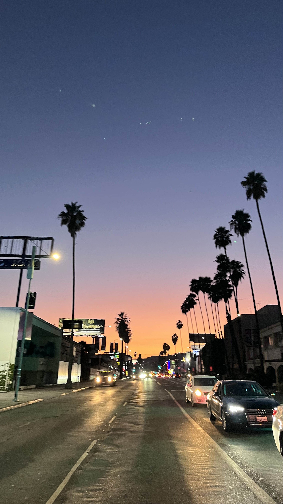
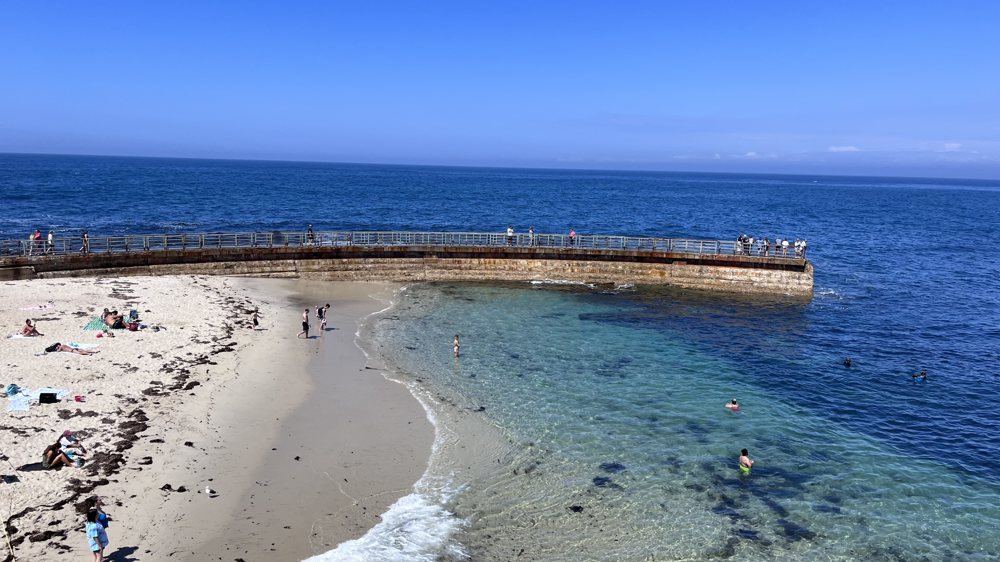
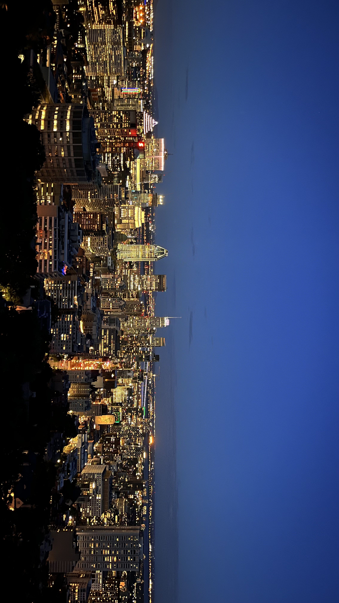
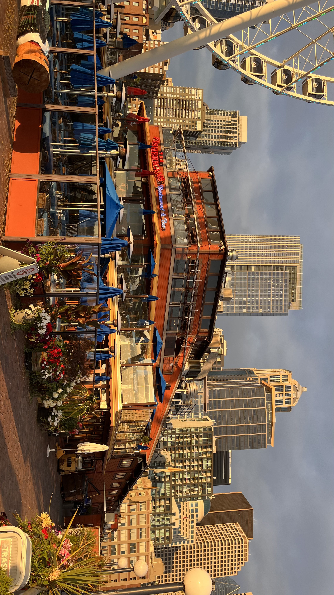
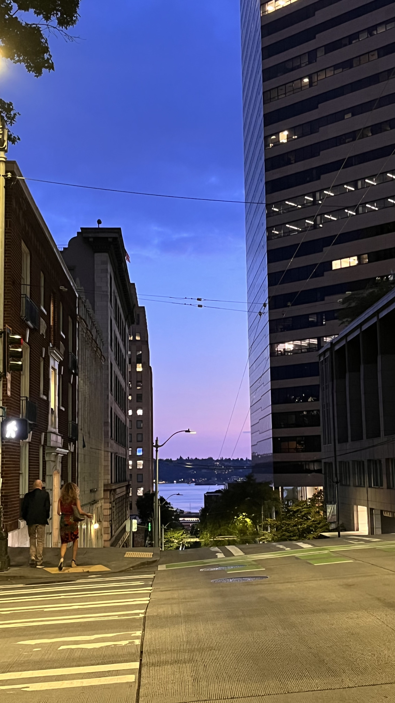
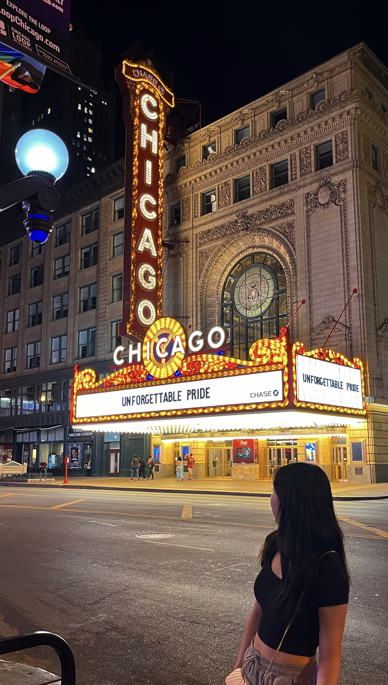
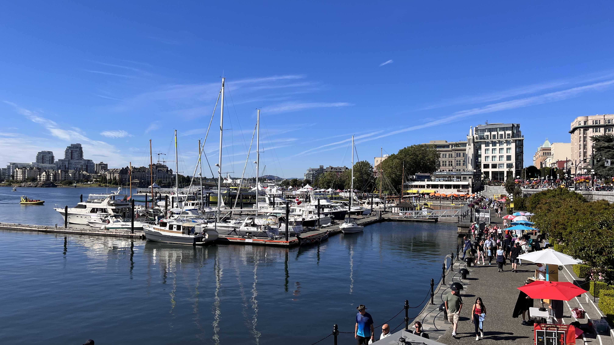
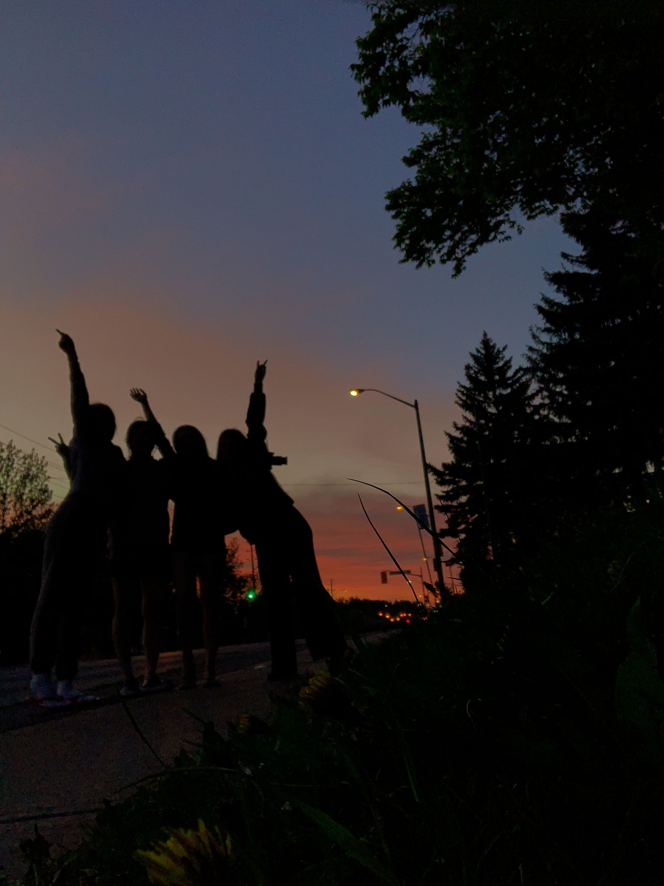

기억에 남는 여행지









안녕하세요, 저는 주렁주렁 결실을 맺고픈 주렁입니다. 개발자로 진로를 바꾸고 난 뒤 정말 좋은 기회로 훌륭한 분들과 함께 공부를 시작하게 되었습니다. 하루하루가 지나갈수록 배울 것들은 넘쳐나고, 조금은 낯선 환경에 열심히 적응하고 있습니다. 지금까지 살아오면서 늘 그랬듯이 새로운 경험은 쉽진 않지만, 언제나 설레는 일이었고, 그 설렘이 더 나은 나를 만들어준다는 걸 잘 알기에 저는 주어진 기회 속에서 최선을 다해 배우고 성장하려고 노력하는 사람입니다. 위 경험들을 바탕으로 도와주시는 분들께 감사함을 가지며, 저도 추후에 도움을 줄 수 있는 개발자가 되길 소망하며 최선을 다해 화이팅하겠습니다!
이 영화는 단순한 SF 영화가 아닌 인류 문명과 사회에 대한 깊은 통찰을 담은 작품이다. 영화는 인간이 아닌 유인원이 지배하는 세계에서 벌어지는 이야기를 통해 인간 존재의 본질을 묻는다. 마지막 장면에서 보여지는 행성의 모습은 인간이 스스로 자멸할 가능성을 경고한다. 또한 이 영화는 1960년대 미국 사회를 풍자적으로 담아내고 있으며, 유인원 사회의 권력층은 과학적 진실을 억압하며 기득권을 유지하려하고, 인간은 열등한 존재로 취급받는다. 이는 오늘날 우리에게도 유효한 문제로 이어지며, 문명에 대한 철학적 질문을 던진다. 영화는 단순한 오락을 넘어, 인간의 오만과 탐욕이 불러올 미래를 경고하는 명작이다.
이민호가 주연을 맡은 이 드라마는 사랑, 우정, 계급 차이를 다룬 감성적인 드라마로, 아주 깊은 여운을 남겼다. 김탄의 따뜻하면서도 강인한 모습은 인상적이었고, 특히 사랑을 지키기 위해 현실과 싸우는 그의 모습이 감동적이었다. 극 중 인물들이 각자의 상처를 안고 성장해 나가는 과정이 공감되었고, 화려한 상류층의 삶 이면에 있는 외로움과 갈등도 현실적으로 다가왔다. 이민호의 섬세한 연기와 매력적인 비주얼이 돋보였으며, 그의 존재만으로도 이 드라마를 더욱 빛나게 만들었다.